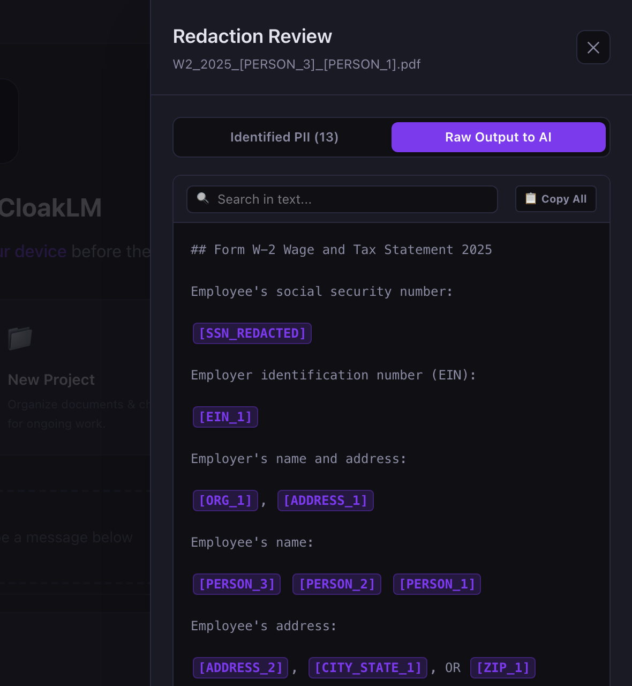

Is It Safe to Upload Your W-2 to ChatGPT?
Short answer: not as-is. A W-2 contains nearly everything someone needs to file a fake tax return in your name. You can still get AI help with your taxes. The trick is that the AI never needs the parts that make a W-2 dangerous.
What a W-2 actually exposes
Every W-2 has the same boxes, and the ones at the top are the risky ones:
| Box | What it contains | Does the AI need it? |
|---|---|---|
| a | Your Social Security number | No |
| b | Employer identification number (EIN) | No |
| c | Employer name and address | Rarely |
| e, f | Your full name and home address | No |
| 1–6 | Wages and federal, Social Security, and Medicare tax withheld | Yes |
| 12 | Coded amounts (401(k), HSA, etc.) | Yes |
| 15–17 | State, state ID number, state wages and tax | State and amounts only |
Your name, SSN, and address, plus your employer’s EIN and your exact wage figures, are exactly what a fraudster needs for tax-related identity theft: filing a return in your name early in the season and collecting your refund before you file. You usually find out when the IRS rejects your real return.
The useful part of a W-2, the numbers, is the part that is harmless on its own. “Wages $84,250, federal withholding $11,320, Box 12 code D $9,500” identifies no one.
What happens to a file you upload to an AI chatbot
When you upload a PDF to a consumer chatbot, the full text, SSN included, is sent to the provider’s servers and stored as part of your conversation. Three things are worth knowing:
- It may be used for training. Consumer chatbots, including ChatGPT, may use conversations to improve their models unless you turn that off in the data-control settings. Check your provider’s current policy; for ChatGPT it is in OpenAI’s “Data controls in ChatGPT” page. Note that rating a response with a thumbs up or down can still send that conversation for training.
- It sits in your chat history. Anyone who gets into your account, through a reused password, a shared computer, or a phished login, can scroll back and read your W-2.
- Deleting is not instant. Providers generally keep deleted data for a period for safety and legal reasons, and opting out of training doesn’t mean the data was never stored.
None of this means the providers are careless. It means a W-2 uploaded today lives on servers you don’t control, under policies that can change. The safest SSN is one that was never sent.
How to get AI help with your taxes safely
Option 1: Type the numbers yourself
For a single W-2, this works fine. Ask your question with only the figures: “My W-2 shows $84,250 in Box 1 and $9,500 in Box 12 code D. I’m single in Oregon. Am I missing any deductions?” It falls apart with several forms, multi-page returns, or when you want the AI to spot something you didn’t think to mention.
Option 2: Redact the PDF first
Black out the identifying boxes, then upload. This works if you use a real redaction tool. Drawing a black box in most PDF viewers only covers the text, and the SSN is still in the file. Our guide on how to redact your SSN from a PDF covers the ways to do it properly and how to check the result.
Option 3: Let a local tool anonymize it for you
This is what we built CloakLM for. It’s a free, open-source desktop app: you drop in a W-2, and before anything leaves your computer it replaces your SSN, name, address, and employer details with placeholders while leaving every dollar amount intact. The AI receives this:

When the AI answers “[PERSON_1] can contribute more to their 401(k)…”, CloakLM swaps the real name back in on your screen. The AI never saw it. You can use Claude, GPT, or Gemini with your own API key, or run a model locally with Ollama so nothing leaves your machine at all.
Whatever tool you use, check before you send. Automated redaction is very good, but not perfect. CloakLM’s “Raw Output to AI” tab shows exactly what will be sent, so a ten-second look catches anything it missed.
One more step worth taking this tax season
Independent of AI, the strongest protection against tax identity theft is an IRS Identity Protection PIN. It’s a six-digit number, issued each year, that must be on any return filed under your SSN. Without it, a fraudulent return is rejected. Anyone who can verify their identity can get one free at IRS.gov.
The bottom line
- Don’t upload a raw W-2, 1099, or tax return to any AI chatbot.
- The AI only needs the numbers, never your SSN, name, or address.
- Type the figures, properly redact the PDF, or use a local anonymizer, and check what’s being sent.
Get AI tax help without sharing your SSN
CloakLM is free and open source for Mac and Windows.
Download CloakLM